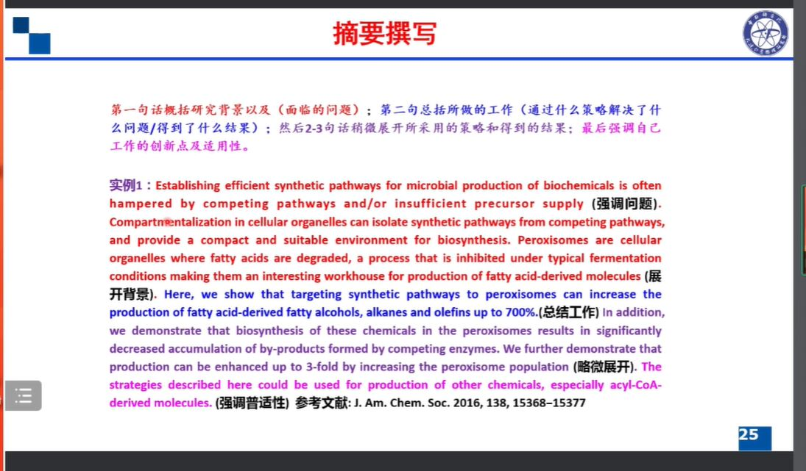
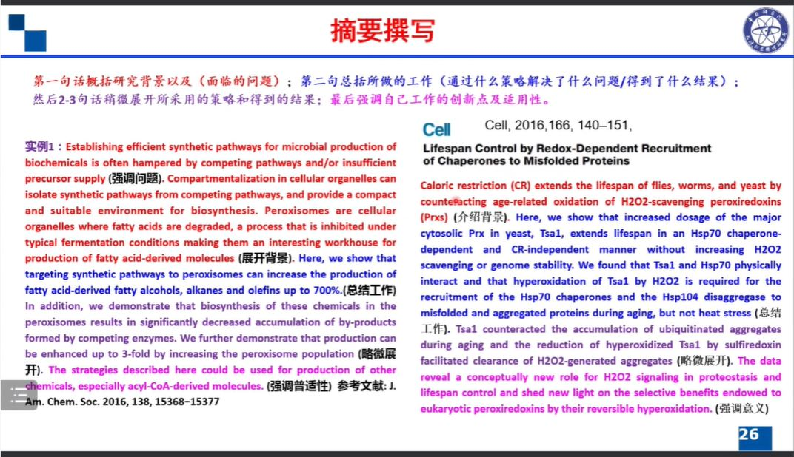
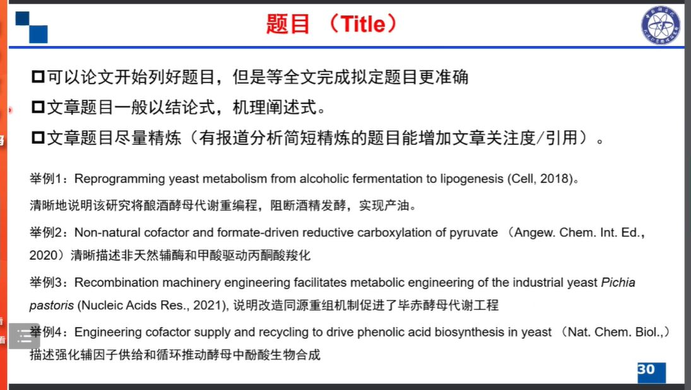
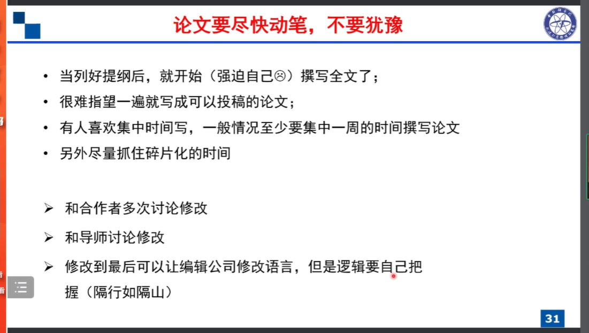
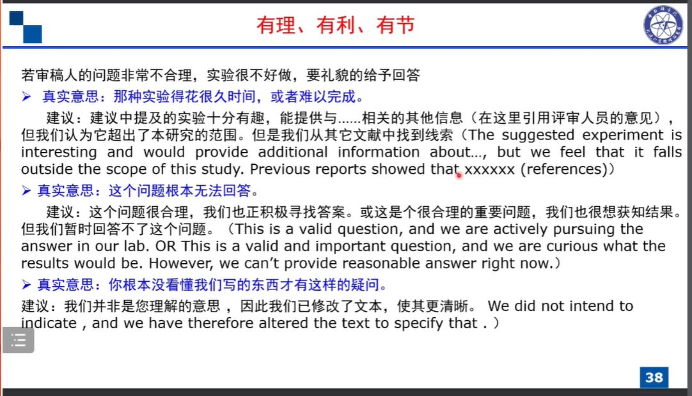
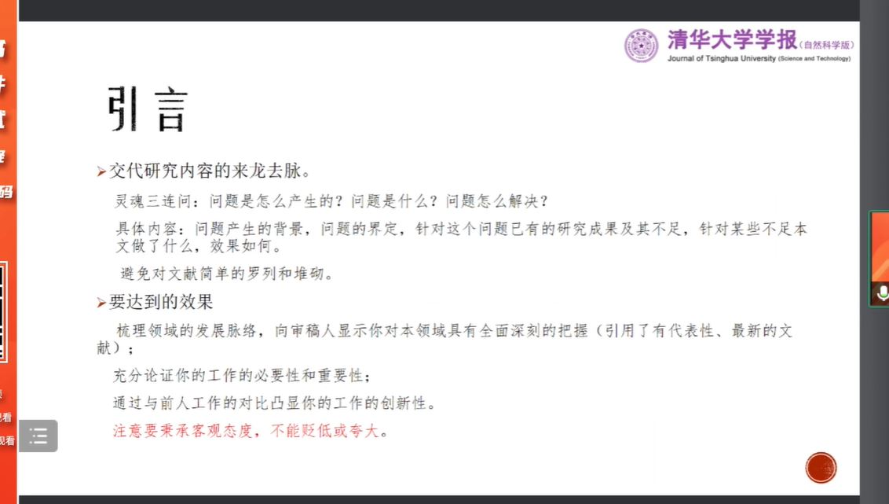
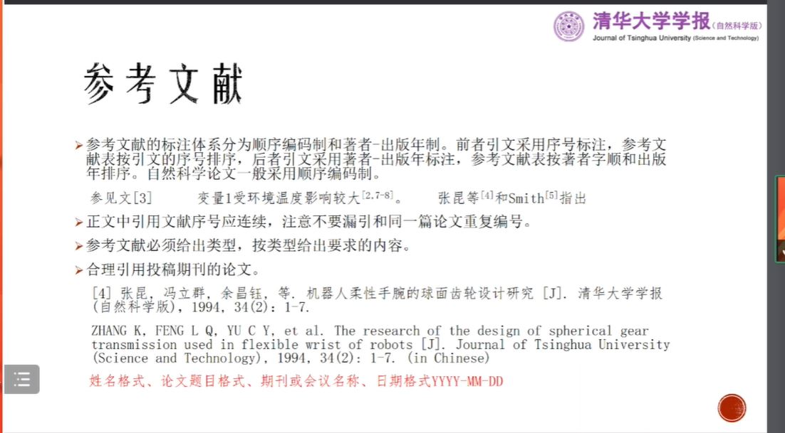
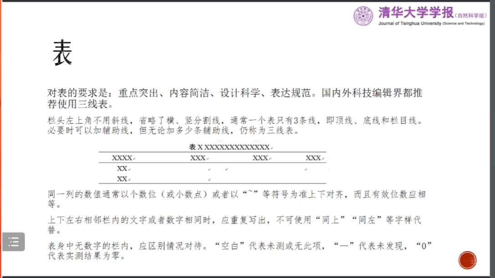
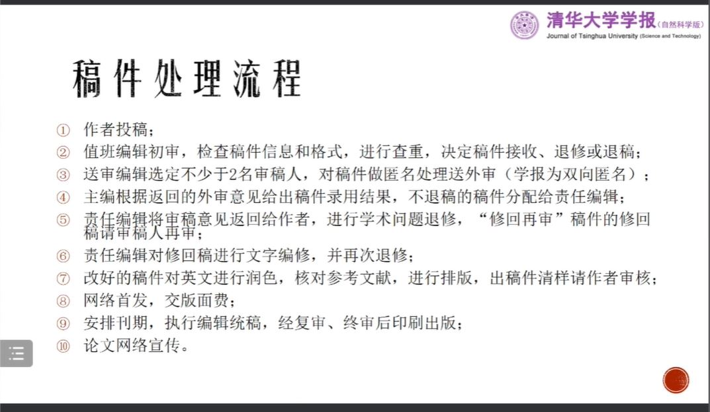

科研知识
文献追踪
论文写作注意点1-逻辑和理论升华
- 行文逻辑，列好大纲
- 多看文献和专注、理论积累
- 合适的语言表达逻辑
提前思考论文的逻辑
当实验完成60%以上，可开始撰写论文提纲，既能理顺思路，还能查缺补漏
关键环节
摘要撰写
第一计划概括研究背景以及面临的问题，第二句话总括所要做的工作（通过什么策略解决了什么问题/得到了什么结果）


Result部分
- 采用层层推进、解决问题的写法，而不是采用做实验顺序介绍
- 逻辑清晰，从有利于读者理解的角度阐述你的研究过程
Discussion部分
- 第一段先总结所取得的的结果（不要太强调数据堆积，而是凝练的结果描述）
- 第二段讨论和前人研究结果、策略比较
- 最后讨论该研究的深层次意义以及对该领域的启发
题目
- 可以论文开始列好题目，但是等全文完成拟定题目更准确
- 文章题目一般以结论式，机理阐述式
- 文章题目尽量精炼

尽快动笔，不要犹豫
- 列好提纲后，开始撰写全文
- 很难一遍机也可以投稿
- 至少集中一周的时间撰写论文
- 尽量抓住碎片化时间

图片
- 千万别直接采用默认生成图
- 颜色配比要清晰明显
- 调整好大小，尽量四面对齐
表格
- 采用三线表
- 直接在word中制作
- 注意有效数字保留一致，一般保留2位有效数字
- 数字大于1时，保留小数点后一位
期刊选择
- 论文开始写之前就应该要考虑期刊选择（2-3）
- 阅读该期刊作者须知以及相关3-5篇论文
- 更具杂志风格调整初稿，建议用endnote插入文献格式
回复审稿人意见
- 审稿人说的有道理的，改
- 要求补实验，而非常难以补充，向审稿人详细诚恳说明，并通过相关论文辅证你的观点
- 意见不合理，要礼貌给予回答

科研思维与压力管理
科研选题
实验设计
- 多思考，及时记录灵感
论文写作与发表
清华大学-刘森
题目
-
描述研究的主要成果，要求明确、简介，不宜过长。
-
署名、单位及基金项目
摘要
- 摘要会影响编辑初审、审稿人审稿和读者检索
- 基本结构包括：目的、方法、结果、结论。要求真实准确，独立成文，简明扼要
- 英文摘要要与中文基本相同，不需要逐字逐句翻译，但意思要覆盖到。可以取见到你摘要的结构，然后填空。
关键词
- 对论文的检索非常重要
- 关键词要明确，可参考《中国分类主题词表》
- 表面笼统的词语
- 不少于三个
- 使用专业术语时给出全程
- 尝试使用自己的关键词搜索文献
引言
- 交代研究内容的来龙去脉
- 要达到的效果
- 一般不用加标题“引言“,加的话是“0 引言”

本论
- 结构合理，论证有利
- 章节大小标题之间是上下位关系，统计标题是平列且互斥的
参考文献

变量
- 论文中变量和字符应该保持一致
- 单字母变量使用斜体，多字母变量使用正体。在此基础上，矢量、矩阵、张量的符号还要使用粗体
- 非变量符号使用正体（常数、运算、从单词转化的脚标）
缩写词
第一次出现缩写词应给出全称
图
图形的示意性、内容的写实性、表达的规范性、印刷的局限性
表
三线表

数值
- 多位数字不能拆开转行
- 数值的增加可用倍数表示，减少只能用分数或百分数
- 科学计数法
稿件处理流程

本博客所有文章除特别声明外，均采用 CC BY-NC-SA 4.0 许可协议。转载请注明来源 Demon Home！